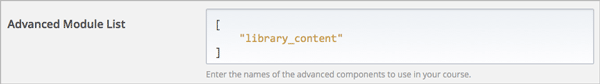
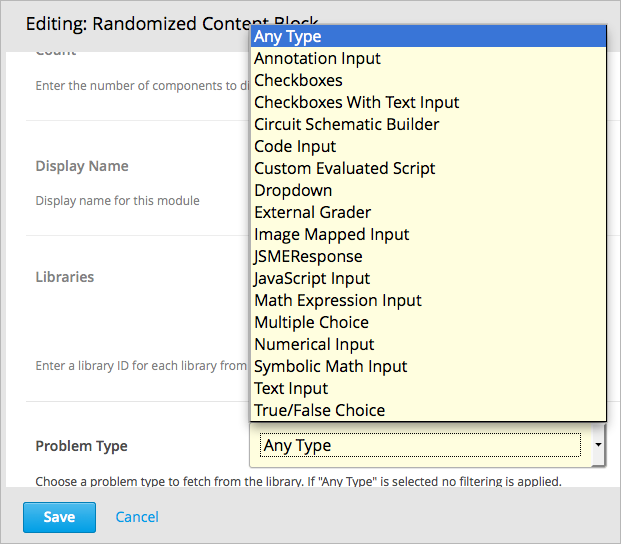
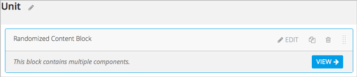
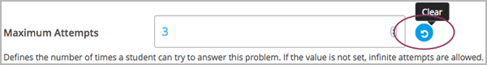
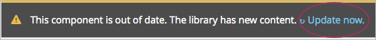

如果你的课程中有 内容库 能够使用并且你你能进入一个内容库并使用其中的内容，你就能引用那个库来创建一个随机分配给学生。
要创建一个随机分配，你需增加一个或多个随机内容块到课程单元中。对于每个随机内容块指定一个将从其中获取内容的库，并指明将随机分配给每个学生的问题的数量和类型。
你创建或能访问的内容库被列位于Studio首页的 Libraries 标签上。内容库的更多详情请参照:ref:内容库.
在课程中使用内容库组件的更多详情请参照这些主题：
创建使用来自内容库的组件的随机分配，你至少要对你所使用的库有 用户 层的访问权。如果你不能访问库，你的课程团队中有对该库 管理员 的成员可以授予你访问权。
你创建或能访问的内容库被列位于Studio首页的 Libraries 标签上。内容库的更多详情请参照 内容库.
在你的课程中使用来自内容库的组件包括两个步骤。
Note
在添加一个随机内容块到你的课程后，注意如果在源库中的组件变更了，如果你想让组件保持与库的同步的话你必须联网手动更新在课程中的组件。
关于在你的课程中如何管理随机内容块，请参照以下主题。
能够使用从在你的课程中的 :ref:`内容库<Content Libraries>`获得的随机组件之前，你必须激活库。
在Studio中，打开你想在其中提供库内容的课程
选择 设置 然后 高级设置
在 高级模块列表 域，把鼠标放在方括号中
点击 保存修改
Studio重排你刚输入的规则键，在新一行中缩进它。

在你 激活内容库 后，你可以用随机内容块的高级组件添加库内容到你的课程中。
在Studio中，打开你想从内容库中添加随机问题的课程。
点击 内容 再点击 大纲
在你想添加一组随机问题的单元，点击 添加新的组件
点击 高级 再点击 随机内容块
随机内容块就添加到你的单元中了
点击 编辑 图标
在随机内容块设置中，指定你想添加到块中的内容的细节部分
对于 计数 输入你要显示给每位学生的问题数
对于 显示名称 输入你想让学生从这个块中看到的名称。
对于 库 选择你想从其中获取问题的库
对于 问题类型 从下拉列表中选择你想从库中获取问题的类型。选择 任意类型 ，如果你不想指定特定的问题类型。
对于 记分 从下拉列表中选择 True 或 False 来表明分配是否会被评分。
Note
评分取决于该单元的章节或小章节。如果小章节或章节不被评分，选择 True 也不会有影响。选择 False 意味着即使小章节或章节被评分，这次分配也不会被评分。
查看匹配你的过滤器设置的源库的组件列表，请参照:ref:查看在随机内容块中的匹配组件
查看Studio中库的所有内容，请参照:ref:查看库内容
在使用随机内容块的单元中，你可以查看匹配在块中指定的过滤器的所有组件的列表。
例如，如果你想指定一个提供给每位学生带3个选项的问题的随机内容块，你会看到存在引用库里的所有选择题。换名话说，你可以看到库里的能提供给学生的每道题。
在Studio中，导航到包含引用了你的库的随机内容块的单元
在随机内容块中，点击 查看 图标
在随机内容块中你会看到能匹配规则的所有组件。在组件列表顶部的文本表明了有多少随机选择并提供给学生的组件
在Studio中查看库内容请参照:ref:查看库内容
查看学生能看到的随机内容，请参照:ref:作为学生查看随机内容
查看作为学生能看到的来自随机内容块的组件的数量和类型，跟随在:ref:`单元预览`主题描述的步骤
查看在库中的匹配组件的列表，请参照:ref:查看在随机内容块中的匹配组件
在Studio中查看库的所有内容，请参照:ref:查看库内容
在Studio中，在使用随机内容块的课程单元中，你可以在随机内容块中采用在你的课程中的对其他任意组件使用的方法来编辑组件。
Note
注意如果你更改组件的 编辑 图标，如果你用来自库中的组件的最新版本来更新随机内容块，这些更改会被覆盖。仅对组件的 设置 图标的更改在更新后会被保持。:ref:关于如何在随机内容块中获得库内容的最新版本，请参照`获得库内容最新版本`
在随机内容块里提供的组件设置最初继承自内容库的组件。在随机内容块中，你可以修改设置使得它们与库中的源组件不同。
你也可以将组件设置重置。如果组件的设置被修改过，紧接着设置域就会有 清除 图标显示。

点击**清除**来恢复默认设置。
如果你库的内容，而该库又被一个或多个课程中的随机内容块引用，这些课程不会自动采用更新的内容。你可以把库里的随机内容块更新到最近版本。
Warning
在发布后若你想更新问题时要小心。你对已发布的问题做修改会影响该课程中学生的体验，以及课程数据的分析。
Note
注意，即使你能够保持在随机内容块中的组件的设置，在组件中对 编辑 标签的更改还是会被覆盖，如果你将组件更新到最新的版本的话。如果你不将随机内容块中的组件更新到库中的最新版本，你就什么也不用做。
如果随机内容块中的组件没有在课程大纲中被编辑，当你下一次在课程大纲中打开随机内容块时，你会看到一条消息，提示在与库中的组件作对比时，你的组件已过期。
更新你的随机内容块组件到内容库中的最新版本请点击**立即更新**
随机内容块更新到它引用的库中的最新内容。
如果你编辑的只是课程中的随机内容块的组件的设置，使得它们与库中原始版本不相同，点击 立即更新 不会失去更改。. 这种情况下在大纲中的随机内容块中的更改会被保留，但是在组件中的修改域旁边会有一个 清除 按钮变得可用。然而，对随机内容块中的组件的 编辑 标签的任何更改会丢失，如果你点击 立即更新 获取最新版本的库。
为了清除任何对课程大纲所做的编辑并把你做过编辑的组件更新到库中的版本，请点击 清除
组件域的值被重置成库中的现有值。